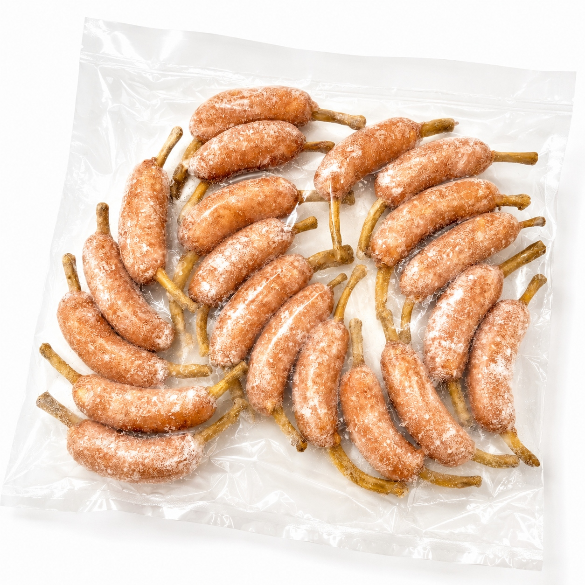

SCENE 01
I010

i 惣菜・加工品
骨付きフランク 50
【BBQやパーティーの主役に！食卓が盛り上がる骨付きフランク。】
- 内容量1kg(20本入り）/ｐ
- 保存冷凍
- 産地日本
商品の特徴を読む
BBQの網の上でジュージューと焼ける音、立ち上る香ばしい香り。そんな楽しい食卓の真ん中に、この骨付きフランクはいかがでしょうか。国産の鶏肉と豚肉を使い、丁寧に作り上げたフランクフルトは、パリッとした皮の中からジューシーな肉汁が溢れ出します。なんといっても、ワイルドな骨付きの見た目が特徴。お子様はもちろん、大人も思わず笑顔になる楽しさで、パーティーやイベントを一層盛り上げます。たっぷり1kg（20本）入った大容量パックなので、ご家族みんなで楽しむのはもちろん、急な来客用やお弁当のおかずとして冷凍庫にストックしておくと大変便利です。フライパンで焼いたり、ボイルしたり、調理はとても簡単。この骨付きフランクで、いつもの食事が特別なごちそうに変わる体験をぜひお楽しみください。
公式サイトへ移動します。価格・在庫・配送条件は移動先で最終確認してください。
SCENE 02
国産の鶏肉と豚肉を使い、丁寧に作り上げたフランクフルトは、パリッとした皮の中からジューシーな肉汁が溢れ出します。
SCENE 03
たっぷり1kg（20本）入った大容量パックなので、ご家族みんなで楽しむのはもちろん、急な来客用やお弁当のおかずとして冷凍庫にストックしておくと大変便利です。
PRODUCT INFORMATION
購入前に確認したい商品情報
- 商品名
- 骨付きフランク 50
- 商品規格
- 1kg(20本入り）/ｐ
- 保存方法
- 冷凍
- 原産国
- 日本
- 製造地
- 日本
- 賞味期限
- 発送日より3ヶ月
原材料
鶏肉（国産）、豚脂、豚肉、結着材（大豆たんぱく、卵たん白、乳たん白）、食塩、砂糖、香辛料、しょう油/加工デンプン、リン酸塩(Na)、調味料（アミノ酸等）、保存料（ソルビン酸）、pH調整剤、酸化防止剤（ビタミンＣ）、発色剤（亜硝酸Na)、着色料（コチニール、ラック）、（一部に小麦・卵・乳成分・大豆・鶏肉・豚肉を含む）
FAQ
購入前のよくあるご質問
おすすめの調理方法を教えてください。
冷蔵庫で解凍後、フライパンやグリルで中心部までしっかり火を通してお召し上がりください。焼き目がつくくらい香ばしく焼くのがおすすめです。お急ぎの場合は、冷凍のまま沸騰しない程度のお湯でボイルしてから焼くと、中まで温かく、よりジューシーに仕上がります。
この骨は食べられますか？
骨は食べられません。持ち手としてお楽しみください。大変熱くなることがありますので、火傷には十分ご注意ください。また、小さなお子様がお召し上がりになる際は、保護者の方が骨を取り外してあげるなど、安全にご配慮ください。
MEAT PLUS OFFICIAL SHOP
【BBQやパーティーの主役に！食卓が盛り上がる骨付きフランク。】
仕入れ・加工・梱包・発送まで自社で行うMEAT PLUSの公式オンラインショップでご注文いただけます。
公式オンラインショップで購入する